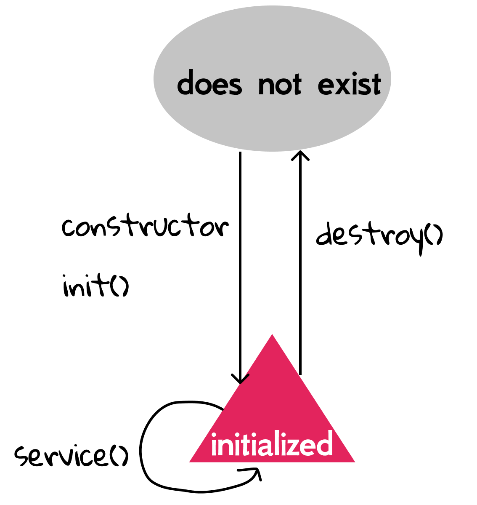
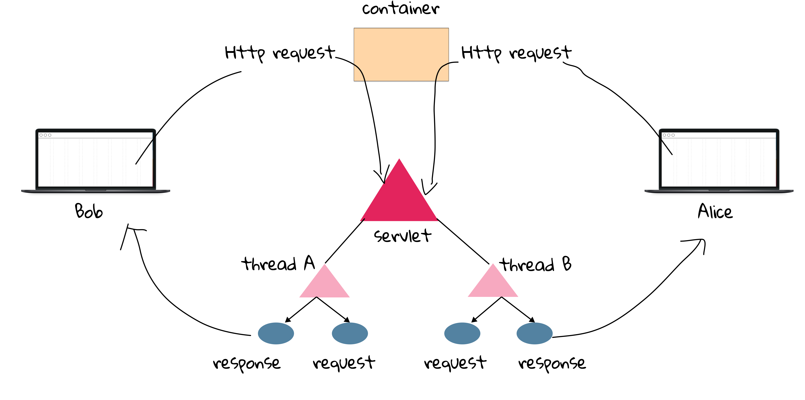

3.1 Servlet: from Birth to Death
In Chapter 2, we looked at the Container's overall role in a servlet's life: it creates the request and response objects, creates or allocates a new thread for the servlet, and calls the servlet's service() method, passing the request and response references as arguments. Please review the whole process in Section 2.1.
Note that we previously mentioned "the container calls the servlet's doGet()", but technically, it calls service() instead.
void service(HttpServletRequest req, HttpServletResponse resp) Receives standard HTTP requests from the public service method and dispatches them to the doMethod methods defined in this class.
As there are several HTTP methods (e.g., GET, PUT, DELETE), service() can dispatch the received request to the matches doXXX(), and such API design provides extra flexibility.
In what follows, we need to investigate several questions with respect to a servlet's life:
- when was the servlet class loaded?
- when did the servlet's constructor run?
- when should your servlet initialize resources?
- when should it clean up its resources?
Those questions may look trivial at first, but solving them is of importance when developing some critical web applications.
Servlet lifecycle
The servlet lifecycle is simple; there's only one main state: initialized. When it is initialized, it is able to handle requests through service(). If the servlet is not initialized, then it is either being initialized, being destroyed, or it simply does not exist.

[!NOTE]
init()is NOT constructor. See more at Why we use init() rather Constructor.
In Java, an object is usually crated through its constructor, such as String s = new String(). Then should we write a constructor for our self-defined servlet (e.g., HelloServlet.java)? Then answer is NO, because the container would use the complier supplied default constructor which is no-argument[1]. After that, the init() method is called to initialize some resources required by the servlet. When finished, the servlet is initialized, and this is where the servlet spend most of its life. Also, the container gives the servlet to clean up using destroy() before the servlet is killed (i.e., made ready for garbage collection).
Note that both init() and destroy() are called only once throughout a servlet's life. In HelloServlet.java, we already saw the usage of init(), and it simply initialized a String object.
private String message;
public void init() {
message = "Hello World!";
}
We can design a small test to verify that init() is called only once: we add an unassigned int member variable in a servlet, increment it by one in init(), and them display this variable in doGet(). You will notice that no matter how many times this servlet is accessed, the value of variable remains 1. The detailed implementation leaves for an exercise.
So, when do we need to initialize something for a servlet? It could be a little abstract without detailed scenarios. For example, the database connection is required to query a database, and code of opening the connection object can be put inside init(). Similarly, in case of resource leak, closing the connection object can be in destroy()[2].
Like doGet() and doPost(), your servlet inherits those lifecycle methods from parent classes or interfaces. And Fig 3.2 shows some essential inherited methods from a bird's-eye view, and it is also a verbose version of Fig 2.4[3].
[!NOTE] Do not try to memorize all fo these methods! Just get a feel for how the API works.

- Servlet interface: It says that all servlets have these five methods, and the three in bold are lifecycle method.
- GenericServlet class: It is an abstract class where most of your servlet's "servlet behavior" comes from.
- HttpServlet class: It is also an abstract class implements the
service()method to deal with HTTP related issues.
Do not get depressed when you see too many inherited methods because in most (more than 99.999%) cases, you need only to override doGet() and/or doPost() for your own servlet. And this is the method responsible for your web application is supposed to do.
Servlet and thread
Before we move on, we have to introduce the background of thread, an importance concept in operating systems.
Process means any program is in execution. Thread means segment of a process.
A single Java program, like a servlet, is a process. A thread is like a virtual CPU that can execute your Java code - inside your Java application. For example, in a downloading program, it may contain several threads to fetch the data from the server concurrently to achieve a higher speed. In Java, there is at least one thread, main thread that every Java application has.
To demonstrate the current execution, we design a multi-threads program in the following[4]:
class Servlet {
public void service() throws InterruptedException {
System.out.println("start to service...");
for (int i = 0; i < 10; i++) {
System.out.println(i);
Thread.sleep(500);
}
System.out.println("end of service...");
}
}
The Servlet class is used to mimic a servlet, and it has a service() method to output values from 1 to 10. Note the Thread.sleep(500) is used to cause the currently executing thread to sleep for 500 milliseconds, and this is to mimic a consuming task in a servlet.
class Container implements Runnable {
private final Servlet servlet;
public Container() {
servlet = new Servlet();
}
@Override
public void run() {
try {
servlet.service();
} catch (InterruptedException e) {
e.printStackTrace();
}
}
}
The Container class is used to mimic the container, and for simplicity, we add a Servlet as its member variable. Runnable is an interface that is to be implemented by a class whose instances are intended to be executed by a thread. When an object implementing interface Runnable is used to create a thread, starting the thread causes the object's run() method to be called in that separately executing thread.
public class Main {
public static void main(String[] args) {
Container container = new Container();
Thread t1 = new Thread(container);
Thread t2 = new Thread(container);
t1.start();
t2.start();
}
}
In the main() method, we firstly crate a Container instance, and therefore, a Servlet instance, and then start two threads to service(). As you expected, the output from 1 to 10 of the two threads are concurrently executed. It is worthwhile to observe the output on your own, and it is left as an exercise for the reader.
Now it is time for REAL servlets: suppose HelloServlet is accessed by two people at the same time, then how many HelloServlet instances are there in the server? Will the container create TWO servlet objects? In general, there are not multiple instances of any servlet. If so, how can the container guarantee that the two requests won't affect each other? For example, in the book-selling website, there is a Checkout servlet. The system shall make sure that Bob won't pay for what Alice bought.
To achieve this goal, the container runs multiple threads to process multiple requests to a single servlet. Therefore, every client request generates a new pair of request and response objects, and they shall not affect each other.

[1] Technically, the container would load the class (i.e., bytecode) of the servlet at the run time, and then use the technology called reflection to find and call its no-argument constructor.
[2] Don't worry if you have some troubles in understanding this example, and we will illustrate it using real code in the later of this book.
[3] Some readers may cannot get the point why interfaces and abstract classes are introduced here. It is a matter of design choice, and such interface-first design is very common is object oriented programming.
[4] Note that the code here is only used to demonstrate the usage of thread, and it is NOT how the container is implemented.